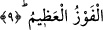

9. Bir de onları, her türlü kötülüklerden koru. O gün sen kimi kötülüklerden
korursan muhakkak ki onu rahmetine mazhar etmiş olursun. Bu en büyük
kurtuluştur.
“Onları kötülüklerden” yâni kıyâmet gününde kendilerini kötü durumda bırakacak
şeylerden “koru” ve dûçar edilebilecekleri cezâları başlarından sav. Çünkü kötülüğün
(seyyie’nin) karşılığı kötülüktür. Dolayısıyla cezâya kötülük (seyyie) denmesi ya
kötülük melzuma yâni ‘kötü ameller’e ad verildiği içindir -ki bu durumda, ‘kötülüğün
cezâsı’ndan ibaret olan lazım için kullanılmış olur- ya da mânâ -muzâfın hazfedildiği
düşünülerek-: “Kötülüklerinden dolayı lâzım gelmiş bulunan cezâdan onları koru”
şeklindedir ki bu durumda âyette söz konusu edilen ‘kötülükler’ kötü amellerden ibaret
olur. Bu da “onları Cahim azabından koru” ifâdesindeki özelleştirmenin akabinde
genelleştirme demektir. Birincisi onların Cahîm azabından korunmaları için duâdır.
İkincisi ise onların Cahîm azâbıyla birlikte kabir azâbı, kıyametteki o bekleyiş, hesâba
çekilme, sorgulanma ve sıratı geçme ve benzeri zorluklardan korunmaları için duâdır.
Üçüncü bir ihtimal de ilk duânın tevbekâr atalara âid olmasına mukâbil, bu ifâdenin
bunların sâlih tâbilerine özgü bir duâ olmasıdır.
“O gün” kıyâmet günü “sen kimi kötülüklerden korursan muhakkak ki onu
rahmetine mazhar etmiş olursun.” Çünkü azaptan âzâde tutulan biri ilâhî rahmete ermiş
demektir.
Birinci “kötülükler”den, dünyada işlenmiş günahların kasdedilmiş olması da câizdir.
Buna göre “kötülüklerden kimi korursan…” ifâdesinin mânâsı şöyle olur: “Her kimi
dünyada günah işlemekten korursan ona âhirette rahmet eylemiş olursun.” Bir nevi,
müminler için müsebbebi (yani âhirette azaptan korunmalarını) taleb ettikten sonra
sebebini (yani dünyada günah işlememelerini) de taleb etmiş olmaktadırlar.
et-Te’vîlâtü’n-Necmiyye’de der ki: “Onları kötülüklerden koru! Yani, koru ki tevbe
ettikten sonra mâsiyet ve günahlara tekrar dönmesinler. «O gün kötülüklerden kimi
korursan, ona şüphesiz rahmet etmiş olursun» şeklindeki duâlarıyla da melekler bu
husustaki her şeyi Allah Teâlâ’nın rahmetine havâle ediyorlar. Zira bu rahmet sâyesinde
hem O’nun âdi yaratıkları olan şeytanlar müminlere musallat olamıyor; hem de
yaratıklarının en üstünleri olan mukarreb melekler O’nun katında şefâat edebiliyorlar.”
Mutarrif der ki: “Müminlerin iyiliğini en çok isteyen varlıklar melekler; onları
aldatmaya en çok çalışan varlıklar da şeytanlardır.”
Zikredilen “bu” rahmet ve koruma “büyük kurtuluştur.” “Fevz,” esenlik içerisinde
zafer kazanmak demek olup mânâ şöyledir: “Ötesinde hiçbir tamahkârın tamah edeceği
bir şey bulunmayan zafer işte budur.” Evet, o büyük bir kurtuluştur. Zira bugün ilâhî
ismet himâyesinde olan, yarın kıyâmet günü sonsuz rahmet gölgesi altında olacaktır. Bu
hususta şöyle denmiştir: